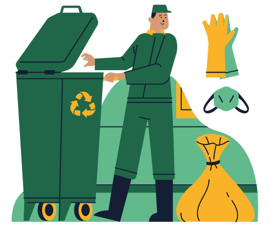

Gestión de residuos
Se denomina gestión de residuos al proceso que engloba las actividades necesarias para hacerse cargo de un residuo. Este proceso comienza con la recolección de los residuos, su transporte hasta las instalaciones preparadas y su tratamiento intermedio o final. Este tratamiento puede ser el aprovechamiento del residuo o su eliminación. En los últimos años se ha incrementado el interés para que esta actividad genere el menor riesgo para la salud y el medio ambiente.
Para el caso de los residuos domésticos (aquellos que se generan en nuestros hogares), la eficiencia de las gestión de los mismos se basa en reducir al mínimo la cantidad de desechos enviados al basurero o relleno sanitario.
Los tratamientos que pueden recibir los residuos domésticos son:
- Reutilización
- Compostaje
- Tratamientos para su separación y clasificación
- Biogás
- Incineración
- Pirólisis
- Gasificación
- Depósito en vertedero
Dentro de estos tratamientos, los primeros tres son posibles de realizar en nuestros hogares. En este sitio hay información sobre cómo reutilizar los residuos domésticos y en que categorías separar aquellos que no podemos reutilizar.